beamsect – BEAMS, Properties of (Start new beam design here)¶
This program could provide data (i.e., cross-section) information by chaining to beamdefl.
Legacy Output¶
Introduction:
PROPERTIES OF COMMON SECTIONS OF BEAMS by George Murphy VE3ERP
Ref: Machinery's Handbook, 21st Edition
Output:
Hollow Tubular Beam ( NOTE: ENTER ALL DIMENSIONS IN INCHES )
ENTER: Outside diameter of section.....? 13
ENTER: Inside diameter of section......? 12
Outside diameter of section........... 13.000 in.
Inside diameter of section............ 12.000 in.
Cross section area of section......... 19.635 in²
Moment of Inertia....(in inches^4).... 384.109
Section Modulus......(in inches^3).... 59.094
Radius of Gyration.................... 4.423 in.
Analysis¶
These are 10 sets of formulae for computing the four interesting factors: cross section, Moment of Inertia, Section Modulus and Radius of Gyration.
| A: | Area |
|---|---|
| Y: | “Radius” |
| I: | Moment of Inertia (in inches^4) |
| Z: | Section Modulus (in inches^3) 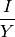 |
| K: | Radius of Gyration 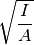 |
Solid Rectangular Beam¶
B: Width D: Height 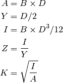
Solid Triangular Beam (flat bottom)¶
B: Width D: Height 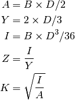
Hollow Rectangular Box Beam¶
B: Width D: Height T_1: Thickness of sidewalls T_2: Thickness of top & bottom walls 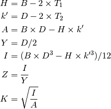
Note the is a quirky use of K as an intermediate variable as well as an output.
Solid Cylindrical Beam¶
D: Diameter 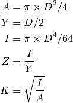
Hollow Tubular Beam¶
D: Outside diameter of section D_1: Inside diameter of section 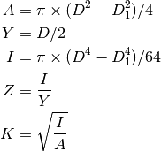
I-Section Built-Up Beam¶
B: Width of top & bottom flanges D: Height of section S: Thickness of top & bottom flanges T: Thickness of vertical web 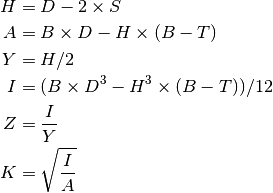
H-Section Built-Up Beam¶
D: Width across outside of vertical legs B: Height of vertical legs S: Thickness of vertical legs T: Thickness of horizontal web 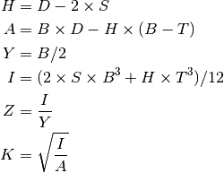
[-Section Built-Up Beam¶
B: Width of horizontal legs D: Vertical height of section S: Thickness of horizontal legs T: Thickness of vertical web 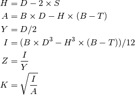
U-Section Built-Up Beam¶
D: Width of base of section B: Height of section T: Thickness of base web S: Thickness of vertical legs 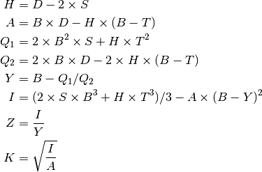
T-Section Built-Up Beam¶
B: Width of horizontal flange D: Height of section S: Thickness of horizontal flange T: Thickness of vertical web 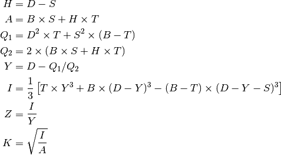
Implementation¶
This imports beamdefl to handle deflection calculations based on beam design.
hamcalc.construction.beamsect
A family of calculation classes to handle 10 beam section cases.
These are a little like degenerate Solver that only compute one set of results.
Test Cases for Beam_1
>>> import hamcalc.construction.beamsect as beamsect
>>> b1= beamsect.Beam_1()( D=4, B=4 )
>>> round(b1.A,3)
16
>>> round(b1.I,3)
21.333
>>> round(b1.Z,3)
10.667
>>> round(b1.K,3)
1.155
Test Cases for Beam_2
>>> import hamcalc.construction.beamsect as beamsect
>>> b2= beamsect.Beam_2()( D=5, B=5 )
>>> round(b2.A,3)
12.5
>>> round(b2.I,3)
17.361
>>> round(b2.Z,3)
5.208
>>> round(b2.K,3)
1.179
Test Cases for Beam_3
>>> import hamcalc.construction.beamsect as beamsect
>>> b3= beamsect.Beam_3()( D=6, B=6, T_1=1, T_2=1 )
>>> round(b3.A,3)
20
>>> round(b3.I,3)
86.667
>>> round(b3.Z,3)
28.889
>>> round(b3.K,3)
2.082
Test Cases for Beam_4
>>> import hamcalc.construction.beamsect as beamsect
>>> b4= beamsect.Beam_4()( D=7 )
>>> round(b4.A,3)
38.485
>>> round(b4.I,3)
117.859
>>> round(b4.Z,3)
33.674
>>> round(b4.K,3)
1.75
Test Cases for Beam_5
>>> import hamcalc.construction.beamsect as beamsect
>>> b5= beamsect.Beam_5()( D=13, D_1=12 )
>>> round(b5.A,3)
19.635
>>> round(b5.I,3)
384.109
>>> round(b5.Z,3)
59.094
>>> round(b5.K,3)
4.423
Test Cases for Beam_6
>>> import hamcalc.construction.beamsect as beamsect
>>> b6= beamsect.Beam_6()( B=5, D=5, S=1, T=1 )
>>> round(b6.A,3)
13
>>> round(b6.I,3)
43.083
>>> round(b6.Z,3)
28.722
>>> round(b6.K,3)
1.82
Test Cases for Beam_7
>>> import hamcalc.construction.beamsect as beamsect
>>> b7= beamsect.Beam_7()( B=5, D=5, S=1, T=1 )
>>> round(b7.A,3)
13
>>> round(b7.I,3)
21.083
>>> round(b7.Z,3)
8.433
>>> round(b7.K,3)
1.273
Test Cases for Beam_8
>>> import hamcalc.construction.beamsect as beamsect
>>> b8= beamsect.Beam_8()( B=7, D=7, S=1, T=1 )
>>> round(b8.A,3)
19
>>> round(b8.I,3)
137.583
>>> round(b8.Z,3)
39.31
>>> round(b8.K,3)
2.691
Test Cases for Beam_9
>>> import hamcalc.construction.beamsect as beamsect
>>> b9= beamsect.Beam_9()( B=7, D=7, S=1, T=1 )
>>> round(b9.A,3)
19
>>> round(b9.I,3)
90.741
>>> round(b9.Z,3)
21.154
>>> round(b9.K,3)
2.185
Test Cases for Beam_10
>>> import hamcalc.construction.beamsect as beamsect
>>> b10= beamsect.Beam_10()( B=7, D=7, S=1, T=1 )
>>> round(b10.A,3)
12
>>> round(b10.I,3)
58.564
>>> round(b10.Z,3)
12.438
>>> round(b10.K,3)
2.209